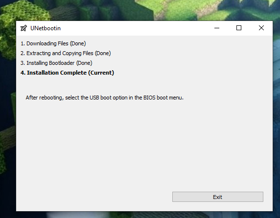
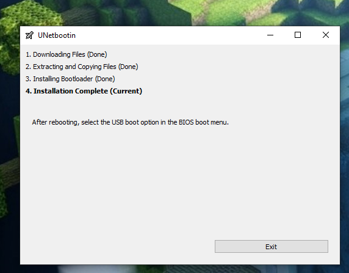

Aloitin tekemään Xubuntu 18.04.03 amd64 Linuxista livetikkua lataamalla levykuvaa ja työkalua tikun luomiseen osoitteista https://unetbootin.github.io/ ja https://xubuntu.org/. Kun levykuva on latautunut, käynnistän Unetbootin-työkalun. Vaihtoehtoina on joko ladata levykuva tai kopioida jo valmiiksi ladatusta tiedostosta, valitsen jälkimmäisen. Kun lataus on valmis, etsin levykuvan työkalussa, valitsen ok ja ohjelma alkaa kirjoittaa tikulle.
 

Hetken päästä ohjelma ilmoittaa asennuksen sujuvan onnistuneesti, suljen ohjelman ja siirryn testaamaan tikkua. Tämän koneen boot-menu aukeaa painamalla F12-näppäintä käynnistyksen yhteydessä.
Käynnistin koneen uudelleen, painoin F12 päästäkseni boot menuun ja käynnistin linuxin tikulta. Näyttö, hiiri, näppäimistö ja internet-yhteys eli kaikki tarvittava näyttää toimivan. Näppäimistön ulkoasu oli vaihtunut oletusarvoisesti varmaankin yhdysvaltojen malliin, mutta sen sai näppärästi vaihdettua terminaalista komennolla setxkbmap fi.